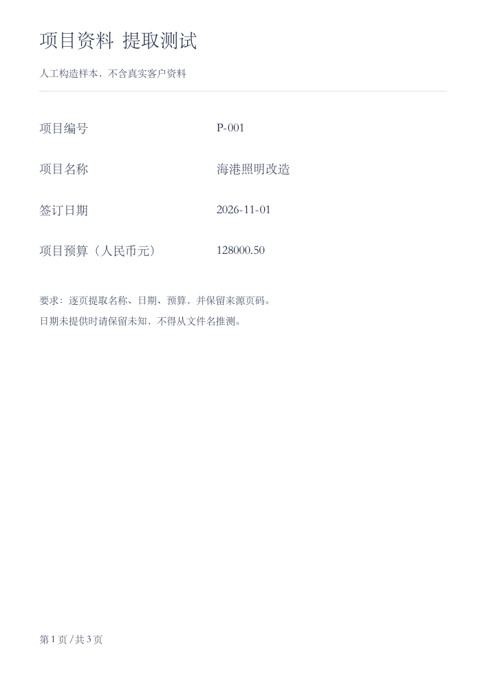

PDF：3 页资料提取与核对
12 / 12 个字段一致2026-11-17 · macOS · Codex CLI 0.160.0 · 固定版本安装
真实试运行产物的本站排版；不是原生聊天客户端截图。未验证 OneAPI 模型组合。测试输入 · 第 1 页

实际提取结果
| 项目 | 日期 | 预算 / 元 | 页码 |
|---|---|---|---|
| 海港照明改造 | 2026-11-01 | 128000.50 | 1 |
| 图书馆网络升级 | 2026-11-08 | 45600.00 | 2 |
| 社区展厅布置 | 未知 | 9800.00 | 3 |
三条记录、12 个字段，与预先保留的标准答案逐项相等；第 3 项日期保留为 null，没有推测。
本次输入是人工构造的文字 PDF；不涵盖 OCR、复杂表格、加密文件。
本地重跑前只修正了测试页标题的缺字分隔符，数据不变；提取脚本由 Agent 生成。
原始执行报告
# PDF 项目提取报告 输入仅为 `fixture.pdf`；未读取 make_fixture.py 或 expected.json，未修改原 PDF。 使用 pdfplumber 0.11.9 逐页提取文本，以字段标签定位项目名称、签订日期和人民币元预算；使用 pypdf 6.21.4 独立核对 PDF 页数。无需 OCR。 预算使用 Python Decimal 解析并输出十进制字符串，避免浮点误差。日期“待确认”转为 JSON null；CSV 对应为空字段。page 保留原始 1 起始页码。 实际读取 3 页，提取 3 个项目，日期未知 1 个；预算合计 183400.50 元。 | 名称 | 日期 | 预算（元） | 原页码 | | --- | --- | --- | --- | | 海港照明改造 | 2026-11-01 | 128000.50 | 1 | | 图书馆网络升级 | 2026-11-08 | 45600.00 | 2 | | 社区展厅布置 | 未知 | 9800.00 | 3 | 输出为 extracted.json、extracted.csv；可通过 extract.py 重复运行。运行前后 SHA-256 一致，确认输入未变。 输入 SHA-256：`e5fd3affe0e9935babb8d87fdf8f17cdc09ec69a0ce14920f9c0127186d4a7f6`。